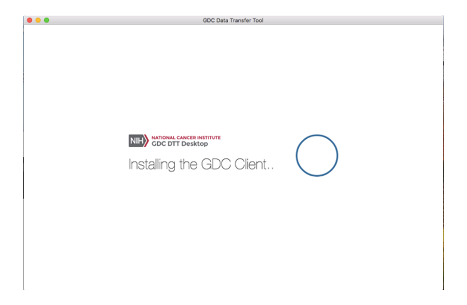
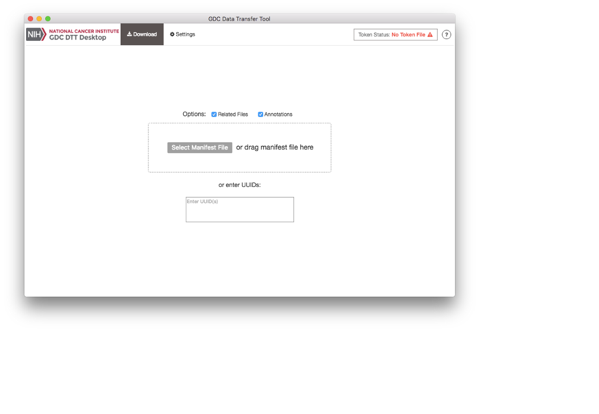
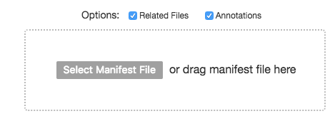
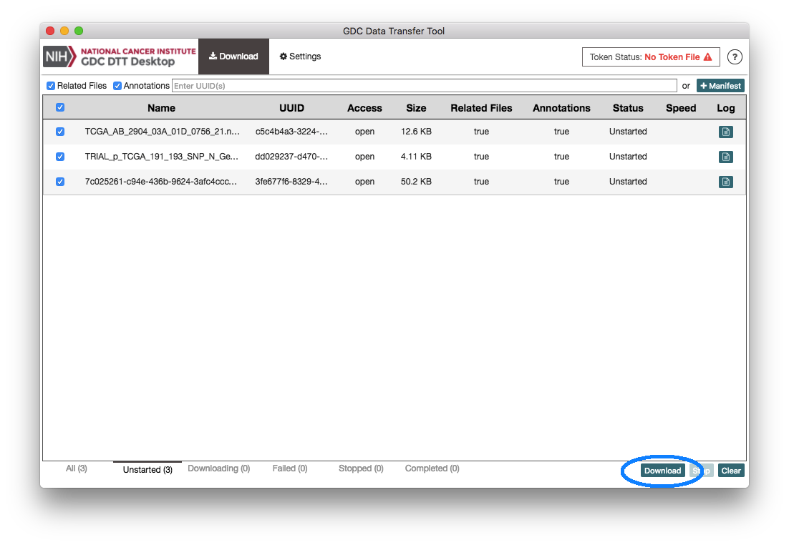
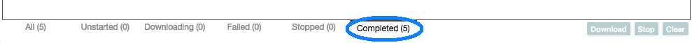
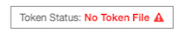
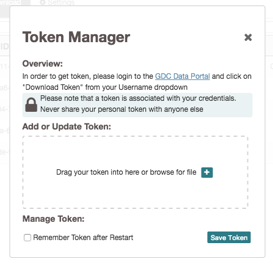
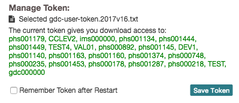
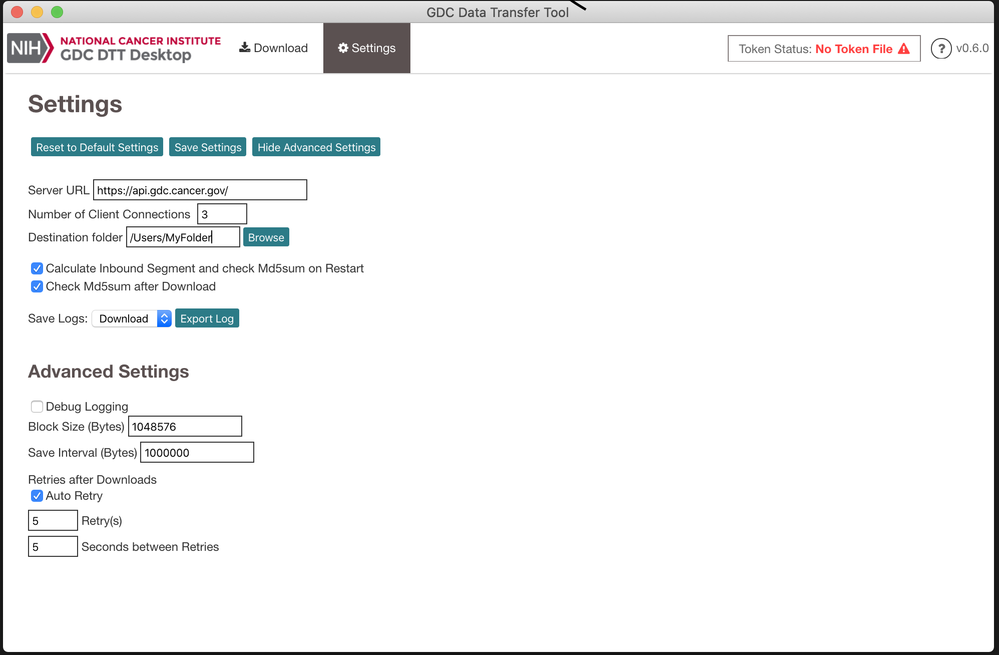

The UI version of the Data Transfer Tool was created for users who prefer a graphical interface over the command line or have limited command line experience. The command line version is recommended for those users with more command line experience, require large data transfers of GDC data, or need to download a large numbers of data files.
The system recommendations for using the GDC Data Transfer Tool are as follows:
Binary distributions are available on the GDC Transfer Tool page. To install the GDC Data Transfer UI download the respective binary distribution and unzip the distribution's archive to a location on the target system that is easily accessible.
Once the binary has been positioned in an appropriate location on the client's file system the application will need to run though a one-time installation process. On first execution the binary install splash screen will appear showing the progress of the installation. A hidden directory is created within the user's home directory labeled dtt that holds configuration and executable files.

The GDC Data Transfer Tool UI is a stand-alone client application intended to work with data file information stored on the GDC Data Portals. Data download information must first be gathered from either the GDC Data Portal or Legacy Archive. From there a manifest file can be generated to supply the client. Alternatively, individual file UUIDs can be provided to the UUID entry window located on the Download tab in the client.

The Data Transfer Tool UI can download files by individual UUID. UUIDs can be entered into the client while on the download tab. The single entry field labeled "Enter UUID(s)" allows the user to enter UUIDs individually.
To obtain a data file's UUID from the GDC Data Portal, click on the file name to display the file's summary page which includes vital information such as its GDC UUID.
A portal-generated manifest file can be used with the Data Transfer Tool UI. From the Download tab home page click on the Select Manifest File button. A file system search window will popup allowing navigation to the manifest file.

The Download Progress Page is the command console for the Data Transfer Tool UI and allows users to monitor downloads. Progress of all downloads including the ability to start, stop, and restart a download are performed on the Download Progress Page. Once file UUIDs or a manifest has been added to the queue the download can be started by clicking on the download button located at the lower right hand side of the page.

Once a download has completed, information about the downloads can be viewed from the Completed tab located at the bottom of the page. Any Stopped or Failed downloads can also be viewed from their respective labels located at the bottom of the Status page.

Some files in the GDC are controlled access. If you require access to these files please review the process outlined in the documentation Obtaining Access to Controlled Data. After appropriate authorization has been granted an access token can be generated to allow the Data Transfer Tool UI application access to the requested data files. Documentation explaining the process of generating a token is located in the Obtaining an Authentication Token for Data Downloads. Once a token has been downloaded to a secure location on the client's local filesystem the Data Transfer Tool UI can now access it.

The current status of client authorization is viewable in the upper right corner of the application. If the image and wording on the token manager access button is in red then no valid client token file has been uploaded. To upload a valid token file click on the token status button. The token manager window should appear allowing either a drag and drop token file upload or a file navigation window can be opened to navigate to the file location.

The token manager will verify access and display the projects for which the user has access. To complete the token upload process click on the save button within the Token Manager window.

While the default download options will work for the majority of use cases, there are a vareity of ways to customize or modify the download process within the DTT UI. Details of each of the settings are listed below.

| Settings | Details |
|---|---|
| Server URL | Default: https://api.gdc.cancer.gov |
| Number of Client Connections: Default (3) | Number of concurrent client threads |
| Destination Folder: Default (User's Home Directory) | User selectable download file location |
| Calculate Inbound Segment and check Md5sum on Restart: Default (On) | Verify previous partial downloaded files via segment check sum |
| Calculates check sums on previous downloaded files Default (On) | Verify downloaded files via file level check sum |
| Save Logs: - Download Navigation windows for client downloads | Export download or token log files via drop down and export log button |
| Debug Logging: Default (Off) | Enable debug level logging for file downloads |
| Block Size (Bytes): Default (1048576) | HTTP chunk size transfers |
| Save Interval (Bytes): Default (1000000) | save interval in bytes |
| Auto Retry: Default (On) | Enables auto retries of failed downloads |
| Retry(s): Default (5) | Number of retry attempts to download a file after failure |
| Seconds between Retrys: Default (5) | Number of seconds between retires |